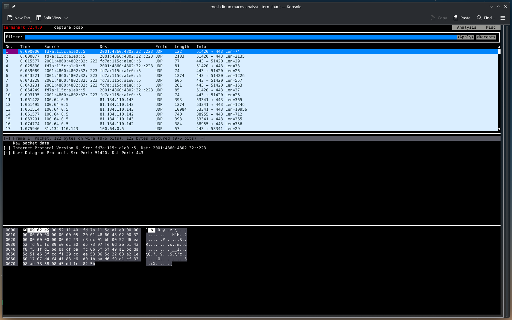

Packet capture, network monitoring and exit node
Configure the analyst workstation as an exit node to route all endpoint traffic through your workstation, enabling network traffic capture for forensic analysis.
Advanced feature
Exit node configuration and packet capture are advanced features that require careful consideration of legal, ethical, and technical implications. Only use these features when legally authorised and technically necessary.
Overview
What is an exit node?
An exit node routes all internet traffic from endpoint devices through the analyst workstation, similar to a VPN gateway.
How it works:
- Endpoint device connects to MESH network
- Endpoint configures analyst workstation as exit node
- All endpoint internet traffic routes through analyst workstation
- Analyst can capture and analyse all network traffic
Use cases:
- Network forensics - Capture and analyse network traffic from suspect devices
- Malware analysis - Monitor C2 communications and data exfiltration
- Evidence collection - Document network activity for legal proceedings
- Threat intelligence - Identify malicious domains and IP addresses
- Incident response - Understand attack vectors and lateral movement
Prerequisites
Before configuring exit node functionality:
- Working MESH deployment - Complete the Getting started guide
- Analyst node - A locked down, virutal linux node with sufficient storage for packet captures
- Root access - Required for configuring routing and packet capture
- Technical skills - Familiar with networking, iptables, and packet analysis
Configure analyst node as exit node
Enable IP forwarding
Enable IP forwarding on the analyst node:
# Enable IP forwarding temporarily
sudo sysctl -w net.ipv4.ip_forward=1
sudo sysctl -w net.ipv6.conf.all.forwarding=1
# Make permanent (survives reboot)
echo "net.ipv4.ip_forward=1" | sudo tee -a /etc/sysctl.conf
echo "net.ipv6.conf.all.forwarding=1" | sudo tee -a /etc/sysctl.conf
sudo sysctl -p
Configure NAT for exit node traffic (optional)
Set up NAT (Network Address Translation) to route endpoint traffic:
# Get your primary network interface
PRIMARY_INTERFACE=$(ip route | grep default | awk '{print $5}')
echo "Primary interface: $PRIMARY_INTERFACE"
# Get MESH interface (usually mesh0 or tailscale0)
MESH_INTERFACE=$(ip link | grep -E 'mesh0|tailscale0' | awk -F: '{print $2}' | tr -d ' ')
echo "MESH interface: $MESH_INTERFACE"
# Configure NAT for MESH traffic
sudo iptables -t nat -A POSTROUTING -o $PRIMARY_INTERFACE -j MASQUERADE
sudo iptables -A FORWARD -i $MESH_INTERFACE -o $PRIMARY_INTERFACE -j ACCEPT
sudo iptables -A FORWARD -i $PRIMARY_INTERFACE -o $MESH_INTERFACE -m state --state RELATED,ESTABLISHED -j ACCEPT
# Save iptables rules (Ubuntu/Debian)
sudo apt install -y iptables-persistent
sudo netfilter-persistent save
# Save iptables rules (RHEL/CentOS)
# sudo service iptables save
Advertise exit node to MESH network
Configure the analyst workstation to advertise as an exit node using this sub command:
# Advertise as exit node
meshcli up --advertise-exit-node
# Advertise as exit node when already connected
meshcli set --advertise-exit-node
# Verify exit node is advertised
meshcli status
# Should show: "Exit node: advertising"
Enable exit node on control plane
On the control plane, approve the exit node:
# List nodes
docker compose exec headscale headscale nodes list
# Find your analyst workstation node ID
# Enable exit node for that node
docker compose exec headscale headscale routes enable --node <NODE_ID> --route 0.0.0.0/0
docker compose exec headscale headscale routes enable --node <NODE_ID> --route ::/0
Configure endpoint to use exit node
On the endpoint device (Android), configure it to use the exit node:
Via MESH Android app:
- Open MESH app
- Go to Settings → Exit node
- Select your analyst node
- Enable "Use exit node"
You should instruct the user to disable Magic DNS in the settings
Using MESH's Magic DNS (which supports connectivity between nodes) will make DNS queries on the device fail since the device needs to use it's own DNS configuration. Thus disabling Magic DNS in the setting tap will make regular DNS queries allowable.
Via meshcli (if available on endpoint):
# Use specific exit node
meshcli up --exit-node=<ANALYST_MESH_IP>
# Use any available exit node
meshcli up --exit-node-allow-lan-access
Packet capture (PCAP)
Capture network traffic from endpoint devices for forensic analysis.
Packet capture tools
tcpdump - Command-line packet capture (recommended for continuous capture) Wireshark - GUI packet analyser (recommended for analysis) tshark - Command-line Wireshark (good for scripting)
Install packet capture tools
# Ubuntu/Debian
sudo apt install -y tcpdump wireshark tshark
# RHEL/CentOS
sudo yum install -y tcpdump wireshark
# Allow non-root users to capture packets (optional)
sudo usermod -aG wireshark $USER
# Log out and back in for group membership to take effect
Capture all traffic from specific endpoint
Capture all traffic from a specific endpoint device:
# Get endpoint's mesh IP address
ENDPOINT_IP="100.64.2.1" # Replace with actual endpoint mesh IP
# Capture all traffic to/from endpoint
sudo tcpdump -i any -w endpoint-capture.pcap \
"host $ENDPOINT_IP"
# Capture with rotation (new file every 100MB, keep 10 files)
sudo tcpdump -i any -w endpoint-capture.pcap -C 100 -W 10 \
"host $ENDPOINT_IP"
Capture only exit node traffic
Capture only traffic that's being routed through the exit node (not MESH internal traffic):
# Get primary network interface
PRIMARY_INTERFACE=$(ip route | grep default | awk '{print $5}')
# Capture only exit node traffic (traffic leaving to internet)
sudo tcpdump -i $PRIMARY_INTERFACE -w exit-node-traffic.pcap \
"src $ENDPOINT_IP or dst $ENDPOINT_IP"
Capture specific protocols
Capture only specific types of traffic:
# Capture only HTTP/HTTPS traffic
sudo tcpdump -i any -w http-traffic.pcap \
"host $ENDPOINT_IP and (port 80 or port 443)"
# Capture only DNS queries
sudo tcpdump -i any -w dns-traffic.pcap \
"host $ENDPOINT_IP and port 53"
# Capture only TLS/SSL traffic
sudo tcpdump -i any -w tls-traffic.pcap \
"host $ENDPOINT_IP and tcp port 443"
# Capture only non-encrypted HTTP
sudo tcpdump -i any -w http-plain.pcap \
"host $ENDPOINT_IP and tcp port 80"
Capture with timestamps and metadata
Add timestamps and metadata for forensic documentation:
# Create capture directory with timestamp
CAPTURE_DIR="captures/$(date +%Y%m%d_%H%M%S)_endpoint_$ENDPOINT_IP"
mkdir -p "$CAPTURE_DIR"
# Capture with detailed logging
sudo tcpdump -i any -w "$CAPTURE_DIR/capture.pcap" \
-v -tttt \
"host $ENDPOINT_IP" \
2>&1 | tee "$CAPTURE_DIR/capture.log"
# Create metadata file
cat > "$CAPTURE_DIR/metadata.txt" << EOF
Capture Date: $(date)
Endpoint IP: $ENDPOINT_IP
Analyst: $(whoami)
Hostname: $(hostname)
Case Number: [CASE_NUMBER]
Legal Authority: [WARRANT/COURT_ORDER_NUMBER]
Notes: [INVESTIGATION_NOTES]
EOF
Capture filters for forensic investigations
Common capture filters for forensic scenarios:
# Capture all traffic except MESH internal (only exit node traffic)
sudo tcpdump -i any -w forensic.pcap \
"host $ENDPOINT_IP and not (dst net 100.64.0.0/10)"
# Capture potential C2 traffic (non-standard ports)
sudo tcpdump -i any -w c2-traffic.pcap \
"host $ENDPOINT_IP and not (port 80 or port 443 or port 53)"
# Capture potential data exfiltration (large uploads)
sudo tcpdump -i any -w uploads.pcap \
"host $ENDPOINT_IP and tcp[tcpflags] & tcp-push != 0"
# Capture DNS queries (identify contacted domains)
sudo tcpdump -i any -w dns.pcap -v \
"host $ENDPOINT_IP and port 53"
# Capture TLS SNI (Server Name Indication) for HTTPS domains
sudo tcpdump -i any -w tls-sni.pcap -v \
"host $ENDPOINT_IP and tcp port 443"
Analysing captured traffic
TermShark
We like to do analysis of short term captures via TermShark, this allows you to remate in terminal without having to serve UI's for network analysis.

Using Wireshark
Open captured traffic in Wireshark:
# Open capture file
wireshark endpoint-capture.pcap
# Or use tshark for command-line analysis
tshark -r endpoint-capture.pcap
Extract DNS queries
Identify all domains contacted:
# List all DNS queries
tshark -r endpoint-capture.pcap -Y "dns.qry.name" \
-T fields -e frame.time -e ip.src -e dns.qry.name
# Get unique domains
tshark -r endpoint-capture.pcap -Y "dns.qry.name" \
-T fields -e dns.qry.name | sort -u > domains.txt
Extract TLS information
Identify HTTPS domains using SNI:
# Extract TLS Server Name Indication (SNI)
tshark -r endpoint-capture.pcap -Y "tls.handshake.extensions_server_name" \
-T fields -e frame.time -e ip.dst -e tls.handshake.extensions_server_name
# Get unique HTTPS domains
tshark -r endpoint-capture.pcap -Y "tls.handshake.extensions_server_name" \
-T fields -e tls.handshake.extensions_server_name | sort -u > https-domains.txt
Identify suspicious connections
Find connections to suspicious IPs or domains:
# Check against threat intelligence feeds
# Example: Check if any contacted IPs are in a blocklist
tshark -r endpoint-capture.pcap -T fields -e ip.dst | sort -u > contacted-ips.txt
# Compare with threat intel (example using grep)
grep -Ff contacted-ips.txt /path/to/malicious-ips.txt
# Identify connections to non-standard ports
tshark -r endpoint-capture.pcap -Y "tcp.dstport > 1024 and tcp.dstport != 8080 and tcp.dstport != 8443" \
-T fields -e frame.time -e ip.dst -e tcp.dstport
Analyse with Suricata IDS
Use Suricata with custom rules to detect malicious activity in captured traffic:
Create custom Suricata rules
Create a custom rules file for forensic analysis:
# Create custom rules directory
sudo mkdir -p /etc/suricata/rules/custom
# Create forensic rules file
sudo tee /etc/suricata/rules/custom/forensic.rules << 'EOF'
# Detect suspicious DNS queries
alert dns any any -> any any (msg:"Suspicious DNS query to known malware domain"; dns.query; content:"malicious-domain.com"; nocase; sid:1000001; rev:1;)
# Detect potential C2 beaconing (regular intervals)
alert tcp any any -> any any (msg:"Potential C2 beacon detected"; flow:established,to_server; threshold:type both, track by_src, count 10, seconds 60; sid:1000002; rev:1;)
EOF
Configure Suricata for PCAP analysis
Update Suricata configuration:
# Backup original config
sudo cp /etc/suricata/suricata.yaml /etc/suricata/suricata.yaml.backup
# Add custom rules to configuration
sudo tee -a /etc/suricata/suricata.yaml << 'EOF'
# Custom forensic rules
rule-files:
- /etc/suricata/rules/custom/forensic.rules
EOF
Run Suricata against PCAP file
Analyse captured traffic with Suricata:
# Run Suricata on PCAP file
sudo suricata -r endpoint-capture.pcap -l /var/log/suricata/ -c /etc/suricata/suricata.yaml
# View alerts
cat /var/log/suricata/fast.log
# View detailed alerts in JSON format
jq '.' /var/log/suricata/eve.json | less
Analyse Suricata output
Extract and analyse Suricata alerts:
# Count alerts by signature
jq -r 'select(.event_type=="alert") | .alert.signature' /var/log/suricata/eve.json | sort | uniq -c | sort -rn
# Extract all alerts with timestamps
jq -r 'select(.event_type=="alert") | "\(.timestamp) - \(.alert.signature) - \(.src_ip):\(.src_port) -> \(.dest_ip):\(.dest_port)"' /var/log/suricata/eve.json
# Filter high-severity alerts
jq 'select(.event_type=="alert" and .alert.severity <= 2)' /var/log/suricata/eve.json
# Extract DNS queries flagged by Suricata
jq -r 'select(.event_type=="dns") | "\(.timestamp) - \(.dns.rrname) - \(.src_ip)"' /var/log/suricata/eve.json
# Extract HTTP requests flagged by Suricata
jq -r 'select(.event_type=="http") | "\(.timestamp) - \(.http.http_method) \(.http.hostname)\(.http.url) - \(.src_ip)"' /var/log/suricata/eve.json
Timeline analysis
Create timeline of network activity:
# Generate timeline of all connections
tshark -r endpoint-capture.pcap -T fields \
-e frame.time -e ip.src -e ip.dst -e tcp.dstport -e udp.dstport \
> timeline.csv
Security considerations
Protecting captured data
Captured packet data is highly sensitive and must be protected:
Encryption:
# Encrypt capture files
gpg --symmetric --cipher-algo AES256 endpoint-capture.pcap
# Decrypt when needed
gpg --decrypt endpoint-capture.pcap.gpg > endpoint-capture.pcap
Access control:
# Restrict access to capture directory
sudo chmod 700 /var/captures
sudo chown root:root /var/captures
# Only allow specific users
sudo setfacl -m u:analyst:rx /var/captures
Secure storage:
- Store captures on encrypted filesystem
- Use separate partition with limited space
- Implement automatic deletion after retention period
- Maintain chain of custody documentation
Privacy considerations
Minimise data collection:
- Only capture traffic from authorised devices
- Use specific capture filters to limit scope
- Avoid capturing unrelated traffic
- Delete captures when no longer needed
Data retention:
# Automatic deletion after 90 days
find /var/captures -name "*.pcap" -mtime +90 -delete
# Add to crontab (daily cleanup)
(crontab -l 2>/dev/null; echo "0 3 * * * find /var/captures -name '*.pcap' -mtime +90 -delete") | crontab -
Troubleshooting
Exit node not working
Symptoms:
- Endpoint traffic not routing through analyst workstation
- Public IP check shows endpoint's IP, not analyst's IP
Solutions:
- Verify IP forwarding is enabled:
- Check iptables rules:
- Verify exit node is advertised:
- Check control plane approved routes:
Packet capture not capturing traffic
Symptoms:
- tcpdump running but no packets captured
- Capture file is empty or very small
Solutions:
- Verify correct interface:
- Check capture filter:
- Verify endpoint is using exit node:
- Check permissions:
High disk usage from captures
Symptoms:
- Disk filling up quickly
- System running out of space
Solutions:
- Use capture rotation:
# Limit to 10 files of 100MB each (1GB total)
sudo tcpdump -i any -w capture.pcap -C 100 -W 10 "host $ENDPOINT_IP"
- Use more specific filters:
# Only capture specific protocols
sudo tcpdump -i any -w capture.pcap "host $ENDPOINT_IP and (port 80 or port 443)"
- Compress old captures:
- Implement automatic cleanup:
Best practices
Forensic investigation workflow
1. Preparation:
- Obtain legal authorisation
- Document investigation scope
- Prepare capture infrastructure
- Test capture setup
2. Collection:
- Start packet capture before connecting endpoint
- Document start time and conditions
- Monitor capture for issues
- Maintain chain of custody
3. Analysis:
- Create working copy of captures
- Generate summary reports
- Identify suspicious activity
- Document findings
4. Preservation:
- Generate cryptographic hashes
- Store on encrypted media
- Maintain multiple copies
- Document storage location
5. Reporting:
- Create forensic report
- Include relevant packet captures
- Document methodology
- Maintain chain of custody
Performance optimisation
For high-traffic captures:
# Increase kernel buffer size
sudo sysctl -w net.core.rmem_max=134217728
sudo sysctl -w net.core.rmem_default=134217728
# Use larger tcpdump buffer
sudo tcpdump -i any -w capture.pcap -B 65536 "host $ENDPOINT_IP"
For long-term captures:
- Use SSD for capture storage (faster writes)
- Monitor disk space regularly
- Implement automatic rotation and cleanup
- Use compression for archived captures
Security hardening
Restrict access to capture tools:
# Only allow specific users to capture
sudo chmod 750 /usr/sbin/tcpdump
sudo chgrp forensics /usr/sbin/tcpdump
Audit capture activity:
# Log all tcpdump usage
sudo auditctl -w /usr/sbin/tcpdump -p x -k packet_capture
# View audit logs
sudo ausearch -k packet_capture
Next steps
- Control plane advanced - Advanced control plane configuration
- AmneziaWG - Configure obfuscation for censorship resistance
- Troubleshooting - Common issues and solutions